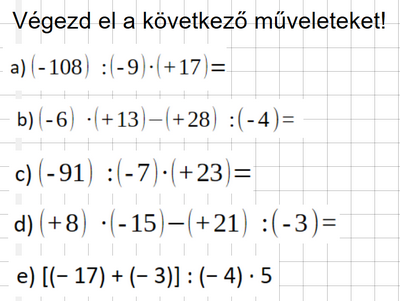
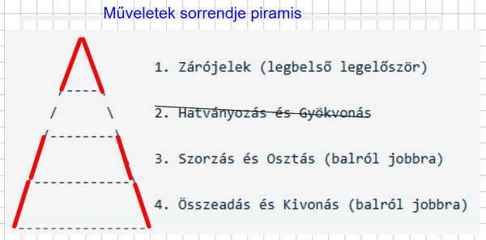

📘 Órai feladatok
Cím / Téma: Műveleti sorrend egész számokkal
Táblaképek:


Részletes levezetések:
1) \(200 - 90 \cdot (-3) =\)
2) \(-4 \cdot (10 - 15) - 7 \cdot (-5) =\)
3) \(-154 - 77 : 11 =\)
4) \(3 \cdot 0 \cdot 4 - (-6) \cdot 10 =\)
5) \((-25) + (-19) \cdot 2 =\)
6) \((45 - 60 : 5) : (-11) =\)